Clase 2 · Del ruido a la imagen - De la imagen al espacio latente
Del proceso directo de corrupción a una representación comprimida de la imagen.
Al finalizar podremos:
En una GAN, generar una imagen suele requerir una sola evaluación:
\[z\sim p(z)\quad\longrightarrow\quad \hat{x}=G_\theta(z)\]
Pero discutimos dificultades de:
¿Podemos aprender a generar imágenes sin enfrentar un generador y un discriminador?
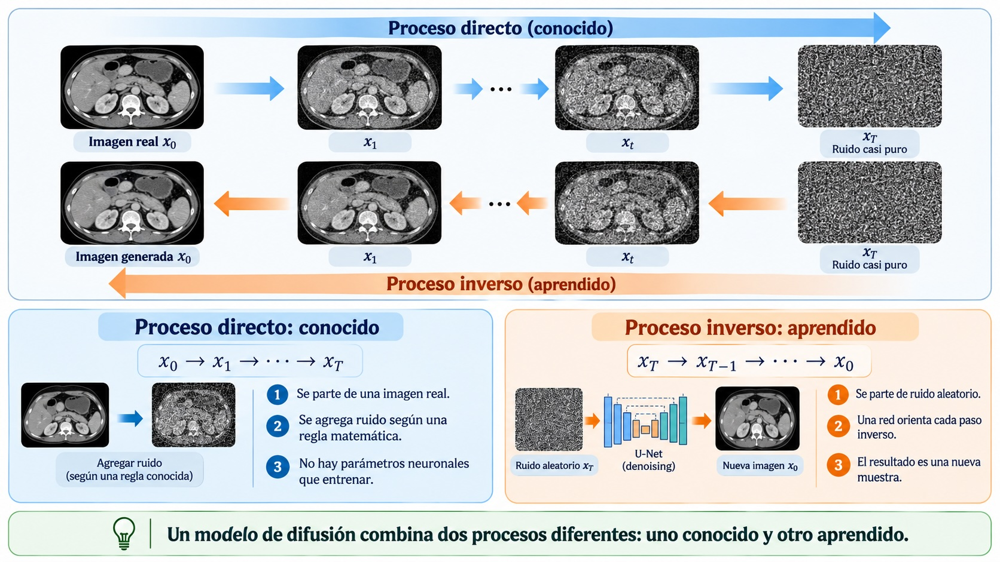
El proceso directo (forward diffusion)
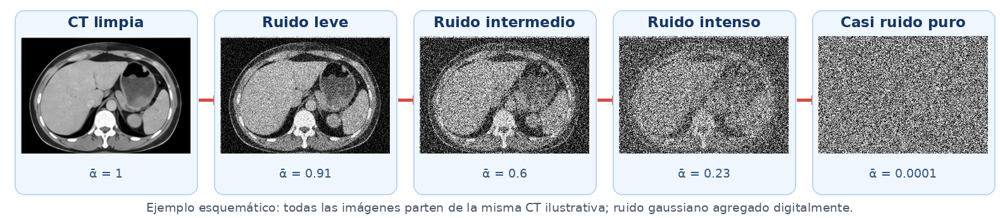
Una transición de un modelos probabilísticos de difusión con eliminación de ruido (DDPM) convencional puede escribirse:
\[ \boxed{q(x_t\mid x_{t-1})= \mathcal N\!\left(\sqrt{1-\beta_t}\,x_{t-1},\;\beta_t I\right)} \]
La distribución \(q\) se especifica antes del entrenamiento.
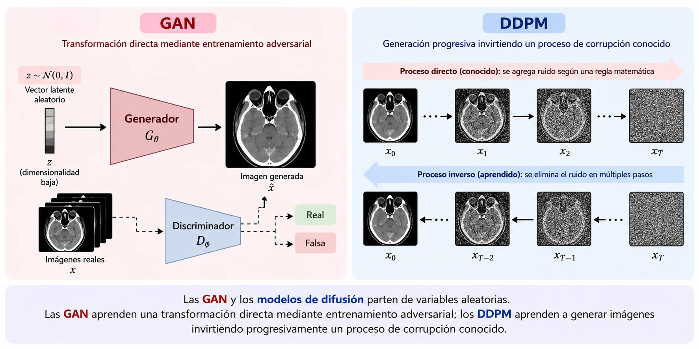
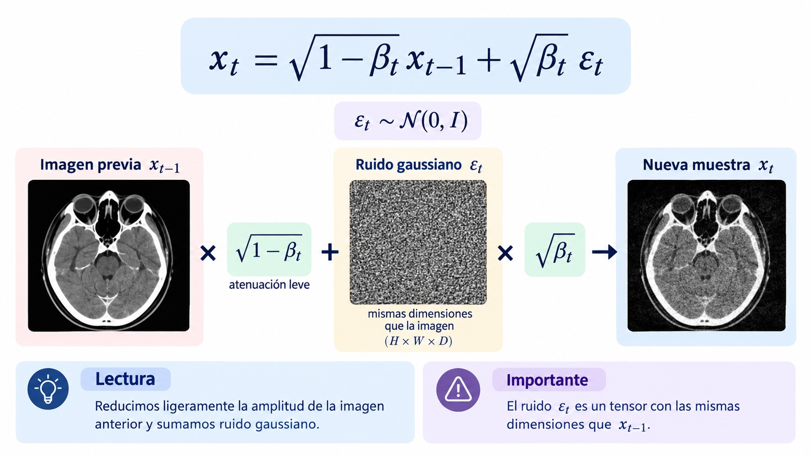
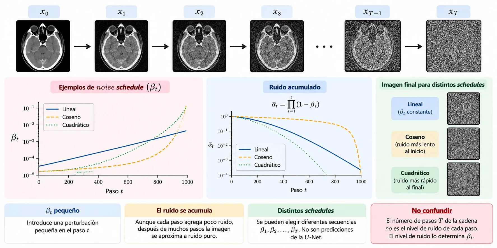
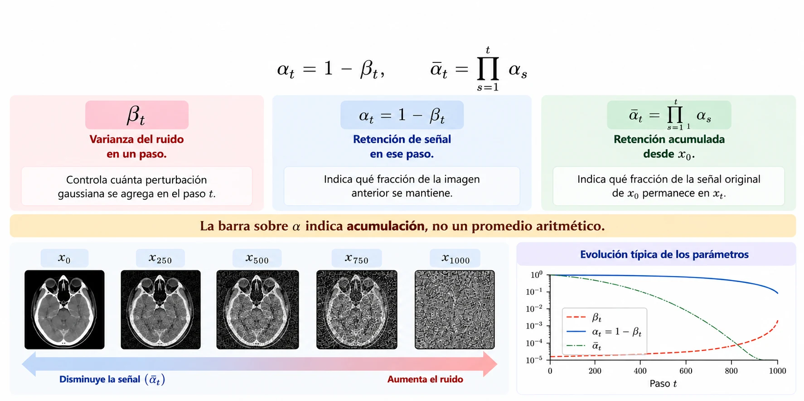
Podemos generar directamente el estado correspondiente a cualquier tiempo \(t\):
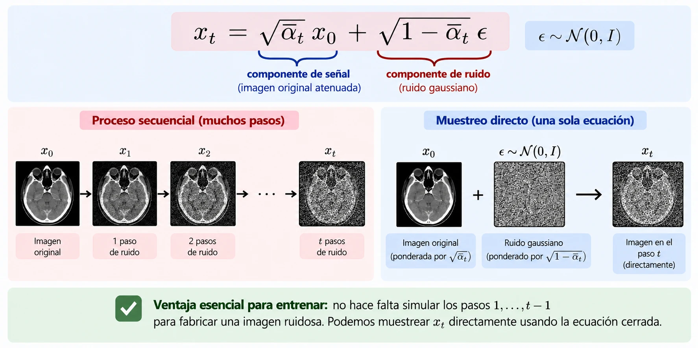
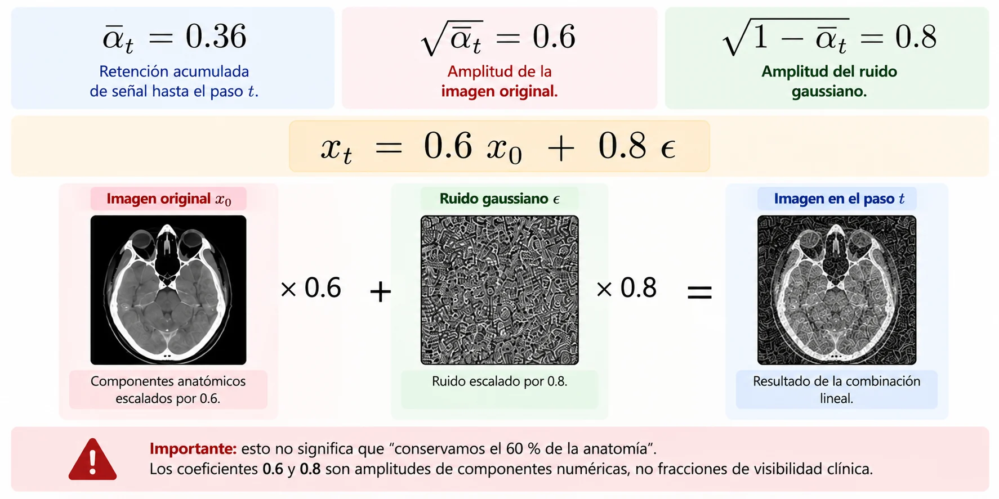
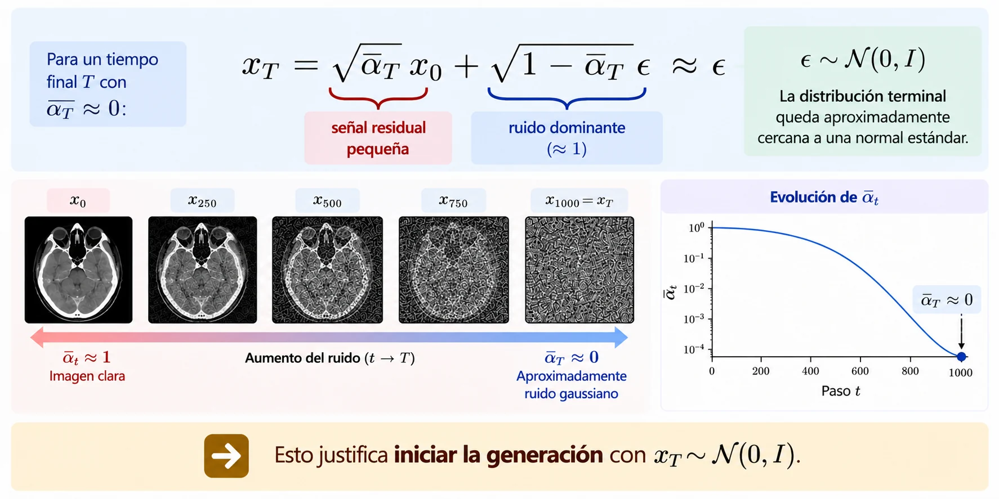
El ruido se aplica sobre intensidades normalizadas para la red, no sobre unidades físicas de CT o MRI.
Plausibilidad visual y fidelidad cuantitativa son criterios diferentes.
El denoiser como problema de aprendizaje supervisado
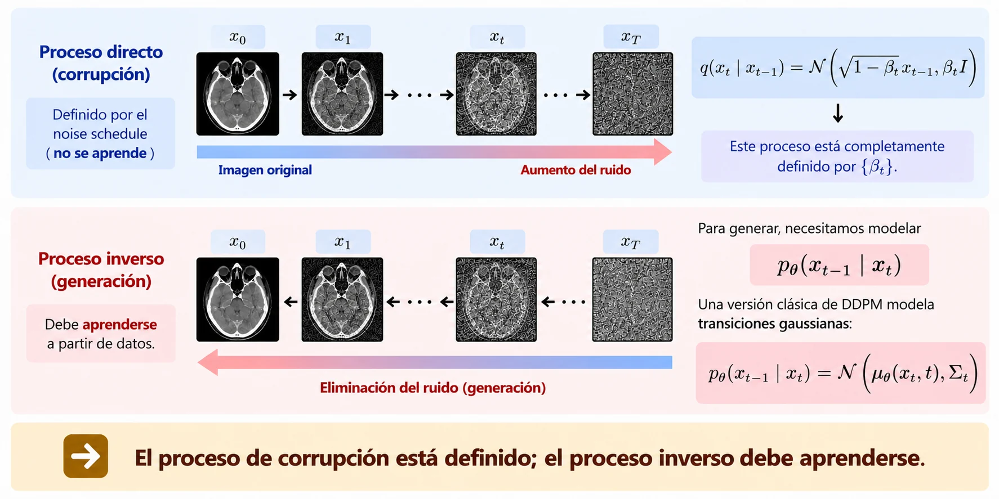
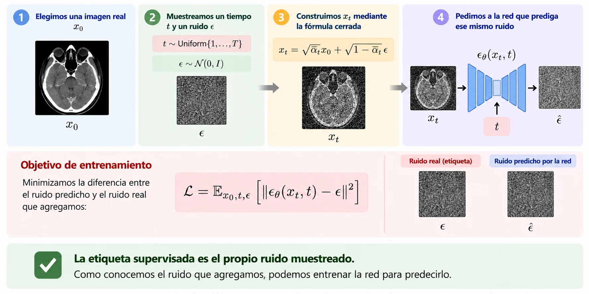
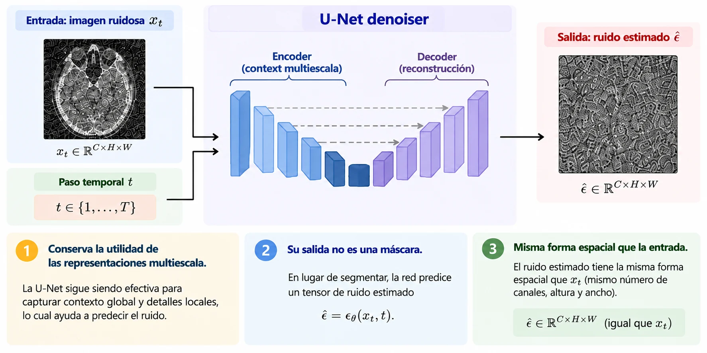
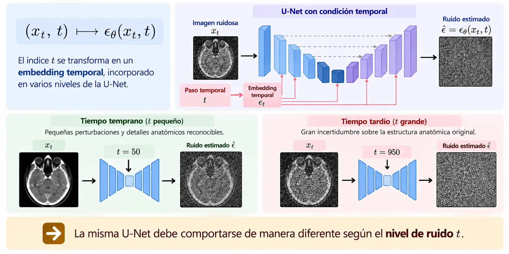
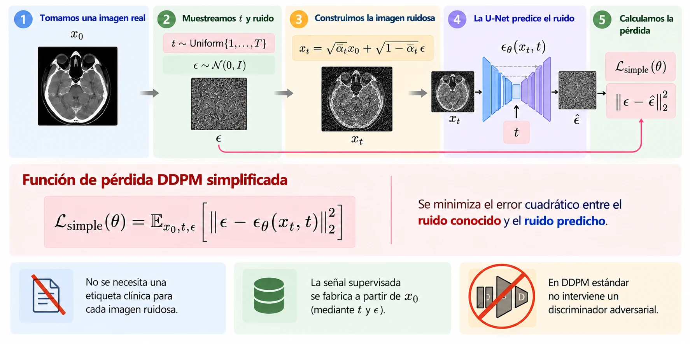
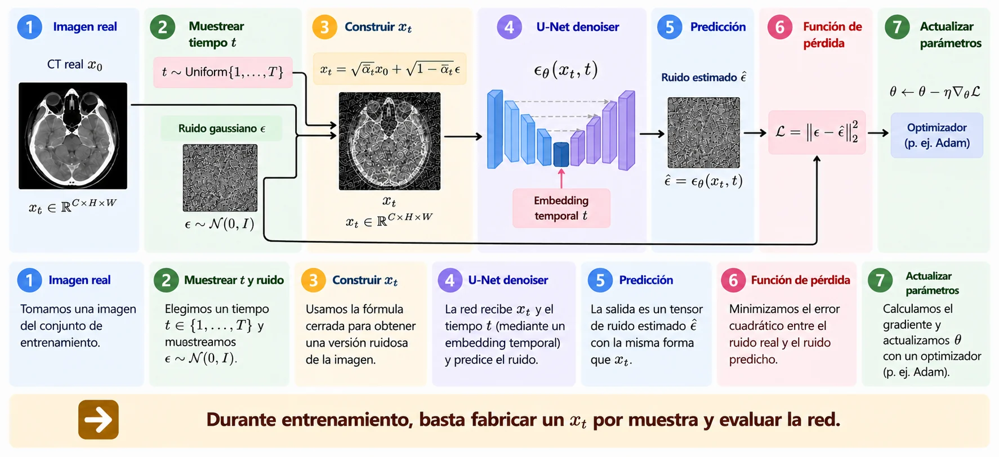
La pérdida sobre ruido indica si la red realiza bien su tarea de predicción.
Pero la calidad de una CT generada depende además de:
La MSE de ruido no sustituye una validación clínica o dosimétrica.
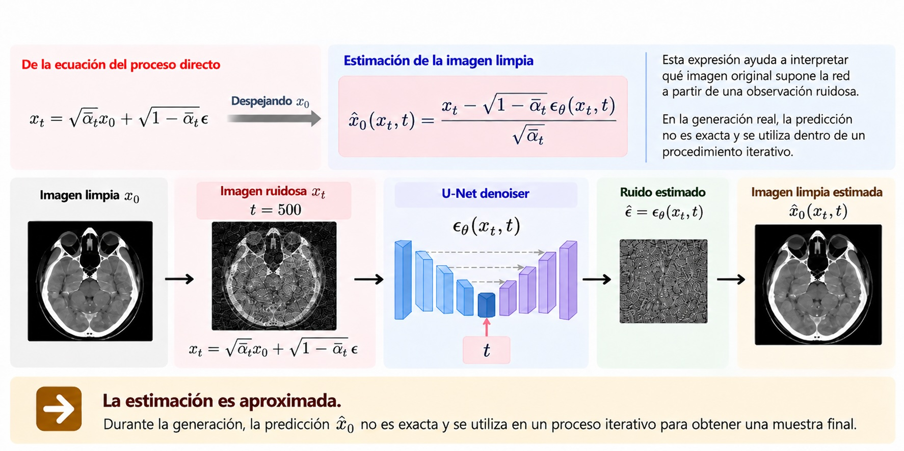
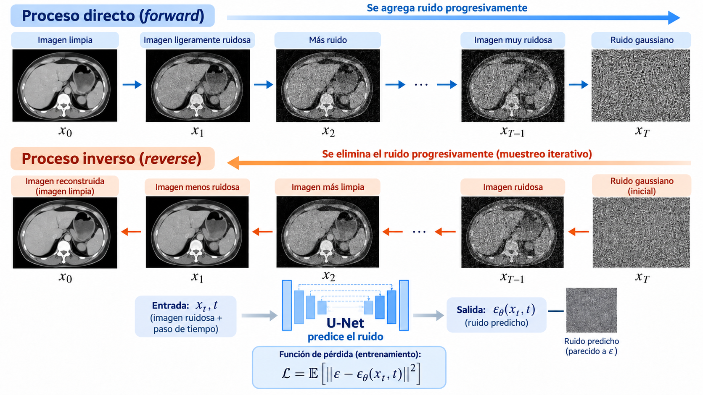
El forward fabrica ejemplos; la red aprende a estimar ruido; el muestreador utiliza esa estimación en sentido inverso.
Notebook: 01_ddpm_2d_fundamentos.ipynb
Vamos a conectar las ecuaciones con su implementación en MONAI.
Nota
Pregunta guía: ¿qué aprende realmente la red y cómo utilizamos ese aprendizaje para generar una imagen nueva?
¿Cómo se utiliza el modelo ya entrenado?
\[\boxed{x_T\sim\mathcal N(0,I)}\]
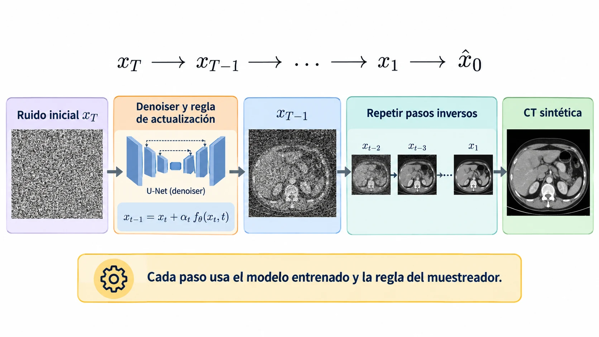
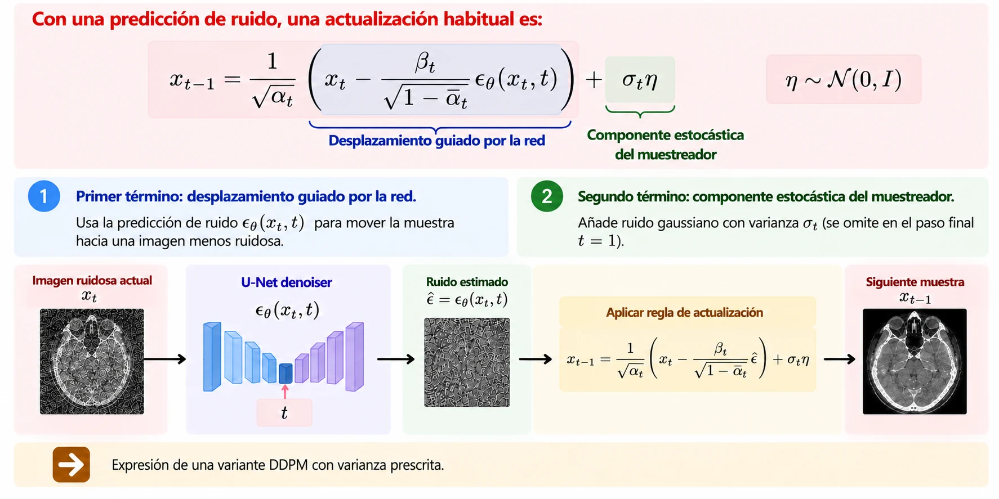
La red estima una cantidad que permite construir una distribución de transición hacia un estado menos ruidoso.
| Entrenamiento | Generación |
|---|---|
| CT real \(x_0\) disponible | Parte de ruido \(x_T\) |
| Elegimos \(t\) al azar | Recorremos tiempos decrecientes |
| Conocemos \(\epsilon\) | Estimamos \(\epsilon_\theta\) |
| Ajustamos los parámetros | Parámetros congelados |
| Un paso de red por muestra | Múltiples evaluaciones |
La misma red sirve en dos flujos computacionales distintos.
La arquitectura del denoiser y el algoritmo de muestreo no son la misma decisión.
Si una evaluación del denoiser cuesta \(\tau\):
\[ T_{\mathrm{muestra}}\approx N_{\mathrm{evaluaciones}}\,\tau+T_{\mathrm{otros}} \]
GAN convencional: típicamente una pasada por el generador.
Difusión clásica: múltiples evaluaciones de un modelo, potencialmente costosas en 3D.
La cantidad de pasos es un compromiso entre tiempo, calidad y diversidad.
| Aspecto | GAN | Difusión clásica |
|---|---|---|
| Entrenamiento | Competencia adversarial | Predicción supervisada de ruido |
| Generación | Una evaluación del generador | Pasos iterativos |
| Dificultad frecuente | Estabilidad y cobertura | Costo de inferencia |
| Discriminador | Sí, en la GAN estándar | No, en DDPM estándar |
La comparación debe hacerse sobre una tarea clínica concreta y un protocolo común de evaluación.
Notebook: 02_ddpm_vs_ddim.ipynb
Utilizaremos el mismo modelo entrenado y compararemos diferentes estrategias de muestreo.
Nota
Pregunta guía: ¿cuántos pasos podemos reducir antes de observar diferencias importantes en las imágenes?
¿Qué cambia cuando queremos una CT o MRI 3D?
En la clase 1 vimos cómo aumenta el número de elementos de \(512^2\) a \(512^3\).
La difusión introduce además una dimensión computacional:
\[ \boxed{\text{Costo de procesar un volumen} \;\times\;\text{número de evaluaciones}} \]
La memoria total de entrenamiento incluye también activaciones, gradientes y estados del optimizador.
Notebook: 03_ddpm_3d_volumenes.ipynb
Pasaremos de generar imágenes 2D a trabajar con volúmenes completos.
spatial_dims=3.Nota
Pregunta guía: ¿por qué generar un volumen anatómicamente coherente es más difícil que generar cortes independientes?
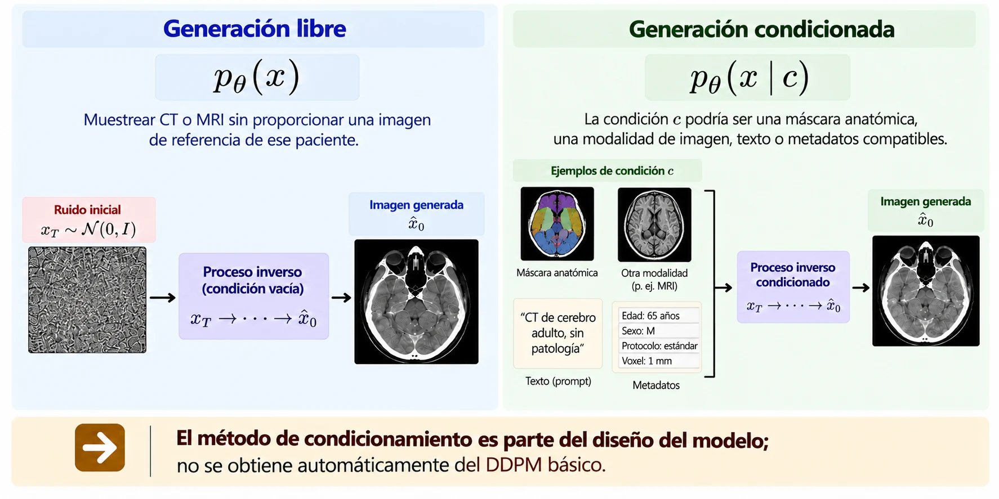
Para uso en Física Médica pueden ser relevantes:
La validación debe depender del uso final, no solo de una métrica visual.
El modelo de difusión anterior trabaja directamente con un tensor del tamaño de la imagen.
En una CT 3D esto implica mucho cálculo, repetido muchas veces.
Pregunta: ¿podemos aprender a conservar la información importante en un tensor más pequeño?
Esta pregunta conduce a los autoencoders.
De los datos al espacio latente
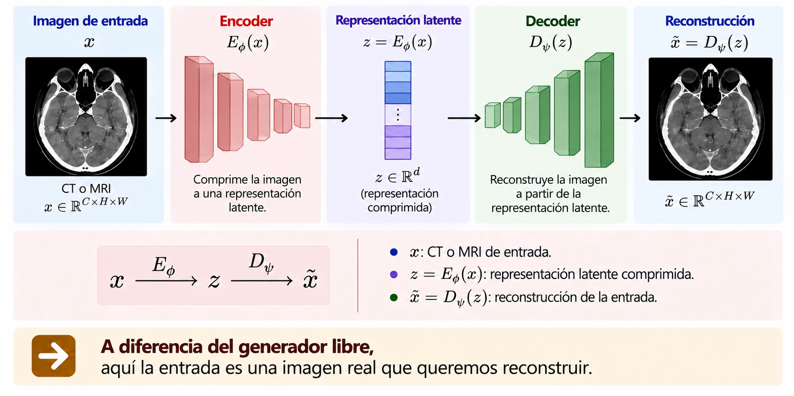
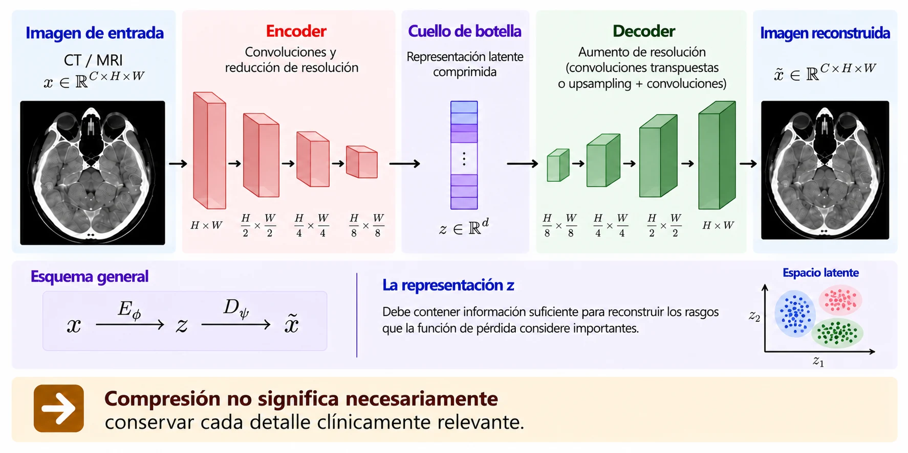
Es el espacio de representaciones posibles \(z=E_\phi(x)\).
Sus coordenadas no tienen por qué corresponder directamente a órganos o atributos anatómicos.
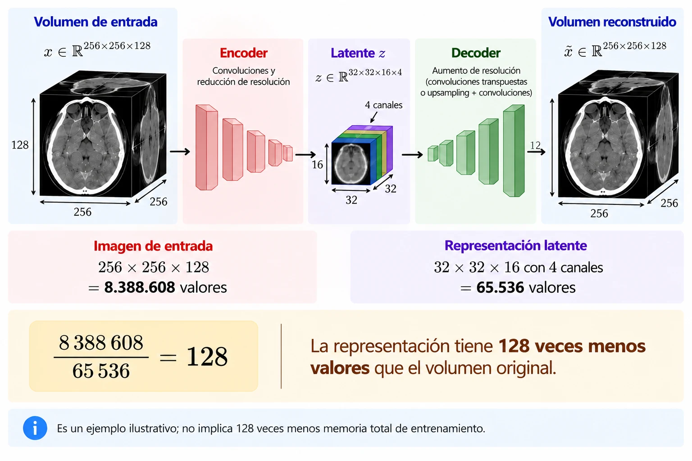
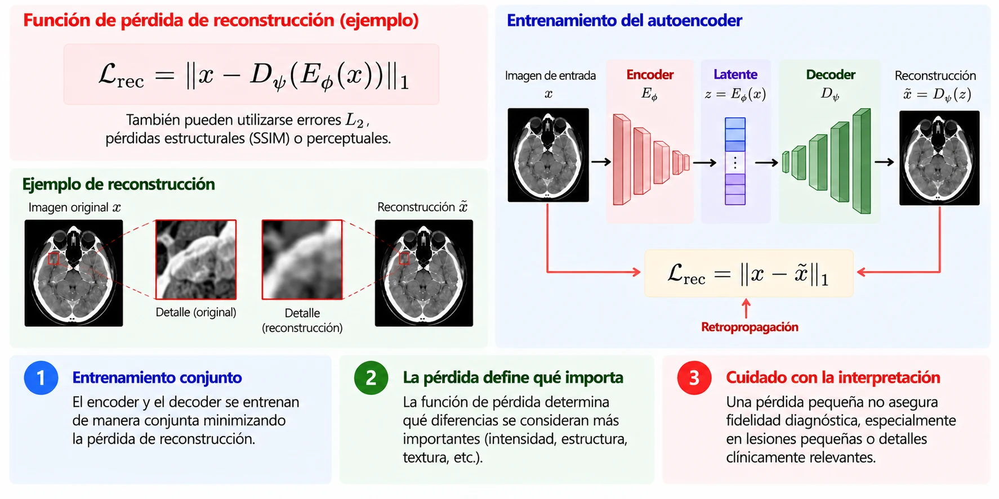
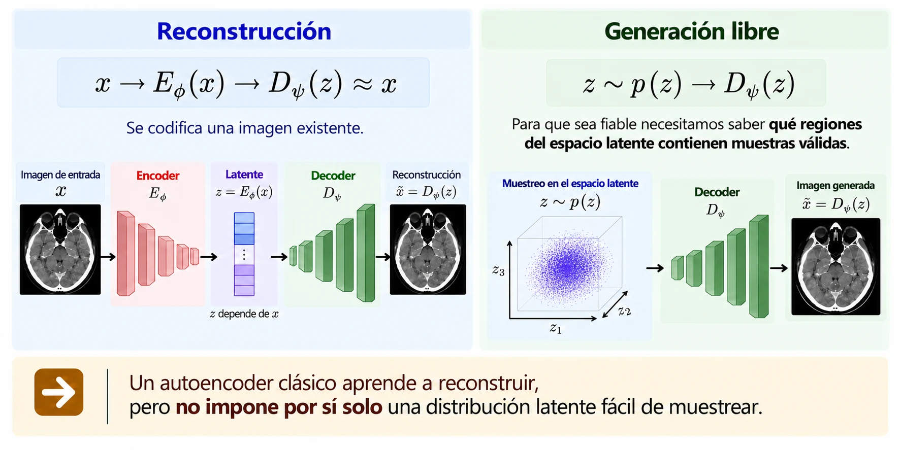
Si el encoder elimina detalles que el decoder no puede recuperar, podemos obtener:
La compresión debe validarse con criterios asociados al uso clínico.
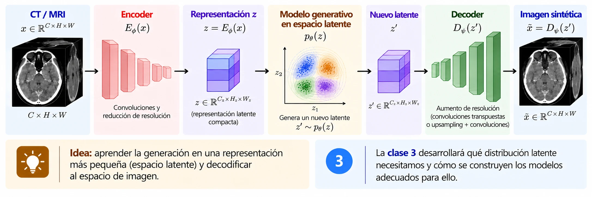
Un encoder convencional puede organizar los ejemplos en regiones difíciles de muestrear.
Si elegimos arbitrariamente \(z\sim\mathcal N(0,I)\), no está garantizado que \(D_\psi(z)\) produzca una imagen válida.
Próxima clase: autoencoders variacionales, regularización KL, AutoencoderKL y difusión latente.
¿Cómo convertir ruido aleatorio en una CT plausible?
\[ \boxed{\text{Predicción de ruido} + \text{muestreo iterativo}\Rightarrow\text{síntesis}} \]
La compresión mediante autoencoders abre la posibilidad de reducir el costo del proceso generativo.